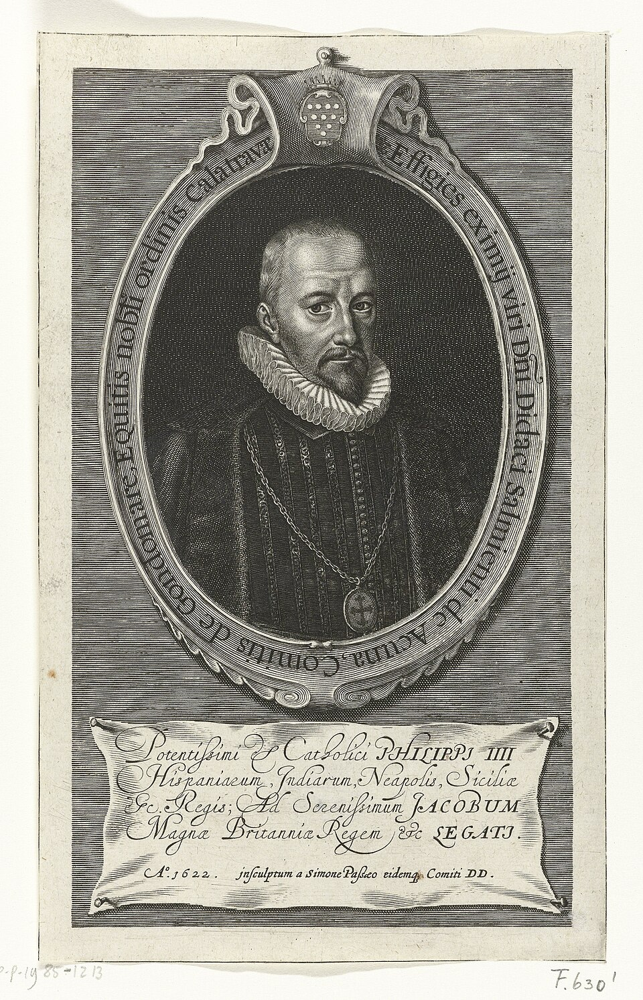
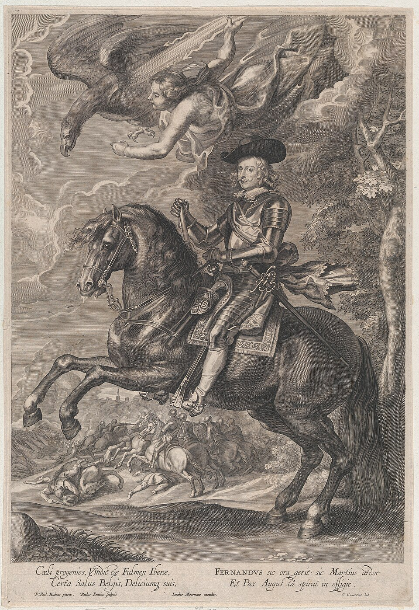

Dossier · Franche-Comté, the Ten Years’ War
Besançon, 1639: the cipher table of don Antonio Sarmiento
Three years after the siege of Dole, Franche-Comté is still at war, and Brussels sends trusted men there. One of them, don Antonio Sarmiento de Acuña, son of the ambassador Gondomar, writes in cipher to the Cardinal-Infante and to Madrid. His original letters are in Brussels and Madrid. But early in the twentieth century a Franche-Comté scholar had them copied, and he copied the cipher table too. That copy is in Besançon. We have transcribed it and put it to the test.
“de mi mano y ciffarle”
Sarmiento explains that he writes his dispatches himself and puts them into cipher (copy in Ms 2093, near the end of the volume).[1]
What is new, what was known
Known. Antonio Sarmiento’s mission to Franche-Comté in 1638–1639 is known to the historians of Saavedra Fajardo and of Antoine Brun.[2][3] The library’s record mentions the “table des chiffres” on ff. 100–103 of Ms 2093.[1] The plaintext of the cipher letters copied into the volume is given by the copyist himself, above the numbers.
New, to our knowledge. A transcription of the table (326 numbers, columns of syllables and signs, 90 three-letter groups), published here as text for the first time to our knowledge; a check fixed in advance, showing that the table applies to the cipher letters of the volume, but only in part with our present reading (69.7% against 10.3% at best for 200 shuffled tables); and the link with the cipher letters of Philip IV and the Cardinal-Infante to Sarmiento kept in Madrid, which Daniel Bourdeau had listed without a key.[6]
Who was Antonio Sarmiento?

Don Antonio Sarmiento de Acuña was the son of Diego Sarmiento de Acuña, Count of Gondomar, Spain’s ambassador in London under James I and one of the best-known diplomats of his time. A knight of Alcántara and a member of the Council of Milan in 1634, he went from mission to mission for the Spanish monarchy: Lorraine in 1633, Modena and Florence in 1634, Vienna in 1635, Speyer in 1636, Switzerland in 1639.[2] He was a man of files and correspondence, the kind Madrid and Brussels sent wherever someone had to negotiate, count money and report back.
1638–1639: an envoy in a country at war

Franche-Comté belonged to the King of Spain and came under the governor of the Netherlands, the Cardinal-Infante Ferdinand, Philip IV’s brother. Since the siege of Dole in 1636, war had not left it.[8] Early in 1638 the Cardinal-Infante decided to send Sarmiento there “a second time”: a memorandum by Sarmiento dated Brussels, 4 February 1638, kept in the Chiflet collection in Besançon, argues that the King’s money must come quickly, “at least at the start”. Sarmiento reached the province in June 1638; he advised putting political government, then held by the Marquis of Saint-Martin, and military command, then held by the Duke of Lorraine, into one pair of hands.[2][5]
He was not alone. Diego Saavedra Fajardo, author of the Empresas políticas, was sent at the same time and handed out the King’s money. The two men did not get on; according to the sources gathered by Rafael González Cañal, Sarmiento clashed “with everyone”, above all with the Parlement of Dole and its procureur général, Antoine Brun, whom readers of the Dole 1636 dossier already know. Saavedra left at the end of September 1638; Sarmiento was still in the province in December, and in Milan in November 1639.[2][3][4]
His letters of 1639 are about money, contracts and the Swiss. The one we checked (f. 24 of Ms 2093) explains that a contract for the supply of money (asiento) had been made in Milan with merchants, who were to deliver the funds at Lucerne, because nobody in Burgundy had money and the country of the Swiss (Esguízaros) was safer; it speaks of munitions and the fortifications of the towns, of an army of seven to eight thousand men, and of the fact that Burgundy had little infantry and no cavalry. It is the war seen by the man who has to pay for it.
How the table reached Besançon
The originals of this correspondence are in the Archives générales du Royaume in Brussels. Early in the twentieth century the Vicomte Albéric de Truchis de Varennes, preparing a biography of Antoine Brun (published in 1932), had them copied or copied them himself. He later gave his notebooks to the Besançon library: they are Ms 2090 to 2115, “Correspondance diplomatique d’Antoine Brun, 1636–1656”, twenty-six notebooks. Volume IV, Ms 2093 (118 leaves), holds the correspondence of the Cardinal-Infante with Antonio Sarmiento from 8 February to 29 November 1639. The record adds: “ff. 100–103: table of the ciphers of the correspondence of A. Sarmiento”.[1][3]
The copyist did valuable work. When a letter is in cipher, he copies the numbers and signs and writes the decipherment above them, line by line, probably from the decipherment on the original (we have not checked this in Brussels). He then copied the table itself at the end of the volume. The volume is digitised on Mémoire vive, the digital library of Besançon; its images are not reproduced here.
The table
The table is a Spanish nomenclator of a type common in the seventeenth century: numbers for letters, others for syllables, others for whole words and names. It is richer than a first look suggests (150 numbers were counted at first):
- Numbers 1 to 30: the letters, with several numbers for the frequent vowels (three for i, two each for a, e, o and u), then va, ve, vi, vo, vu and ca.
- Numbers 31 to 90: syllables in series (ce, ci, co, cu; sa…su; da…du; la…lu; al…ul; cha…chu; fan…fun; man…mun; van…vun; tan…tun), plus three numbers for que and two for de.
- Numbers 91 to 326: words and names in rough alphabetical order, from conde to Rey: the Duke of Bavaria, the Duke of Lorraine, the Duke of Savoy, God, Flanders, France, Francisco de Melo, the Emperor, the Swiss (Esguízaros), Italy, the Marquis of Leganés, the Marquis of Castañeda, Milan, Naples, Prince Thomas, Piedmont… 213 numbers have a value; the others are blank in the copy.
- Unnumbered columns (f. 102): pairs of syllables, a “letter for letter” column (a, o, y, c… written for u, b, c, g…), underlined capitals for words (B for fundamento, F for guerra, M for gente, R for gobierno, O for Genoa), and signs (among them a “repeat sign” and a “+” marked “cipher”).
- Three-letter groups (f. 103): cli = batalla, cru = Burgundy, gle = cardinal, Iut = H.M., luc = secreto, ral = the Valtellina, nuf = Y.M.…
Blank cells are many, and some numbers are duplicated (24 and 25 both stand for “va”). The copied table may be incomplete, or rebuilt by the copyist from the letters: a hypothesis that only the original could settle. The full transcription is given below.
What the table can read
Here is the start of a line of the letter on f. 24, as we transcribed it on strips with the gloss masked, then decoded mechanically with the table, correcting nothing, and finally compared with the copyist’s gloss:
| cipher in the copy | 32 | 18 | p | ho | 37 | 20 | 2 | 43 | 267 | x | ho | hi | 280 | on | 3 | 86 |
|---|---|---|---|---|---|---|---|---|---|---|---|---|---|---|---|---|
| frozen table | ci | o | n | ? | si | e | ʒ | do | necessario | u | ? | ? | otro | ? | 2 | que |
| gloss in the copy | ci | o | n | no | si | e | n | do | necessario | u | no | ni | otro | po | r | que |
Reading: [anti]cipacion, no siendo necessario uno ni otro, porque… (“the advance [of money], neither the one nor the other being necessary, because…”). Highlighted cells are where our table is wrong or silent.
The example shows both that this is the right table and what our reading still lacks. Letters (18 = o, 37 = si, 43 = do), words (267 = necessario, 280 = otro) and the “letter for letter” column (p written for n, x for u) work. But the syllables of column A on f. 102 (ho, hi, on) have no value in our transcription: the gloss shows that they are read through the neighbouring column B, line by line (ho = no, hi = ni, on = po, an = pa). And the signs we read as “ʒ” and “2” at nos. 2 and 3 of the table are in fact n and r, probably cursive letters we misread. Elsewhere in the same letter the table gives cru = Burgundy, 174 = Esguízaros, 251 = Milan, as the gloss does.
The check: one measurement, a partial result
Finding agreements after the fact is easy; the hard part is proving that a table applies. We fixed the procedure in writing, and recorded its fingerprint (SHA-256), before opening a single cipher page:[7]
- Frozen table. The table was transcribed first, then frozen: no value could be corrected or guessed during decoding.
- Blind transcription of the cipher. The letter on f. 24 (view 31) was transcribed on strips with the interlinear gloss blanked out: 706 numbers and signs.
- One measurement. The mechanical decoding was compared with the gloss, read only afterwards: 461 of 661 glossed numbers and signs decode exactly as the copyist has them, that is 69.7%. For 200 randomly shuffled tables the best score is 10.3% (0.5% on average).
- Verdict. The table clearly applies: it does six to seven times better than chance. But the threshold fixed in advance was 85%, so the result is classed as partial, not validated. There was no second measurement.
An analysis of the 200 misses, made after the measurement and with no value as proof, shows that they come mostly from our transcription of the table (108 codes without a value, nearly all in columns A and B of f. 102; nos. 2 and 3; an un-underlined “H” standing for t, distinct from the underlined H that stands for gracia), not from a different system. A table corrected on these points would very probably pass 85%, but we have not measured it: that needs a new procedure, on another glossed letter of the volume (there are some on views 27 to 41).
The Madrid letters
The table matters beyond Besançon. In Madrid, the Real Academia de la Historia keeps, in the Salazar y Castro collection (volume A-87), the original letters, nearly all in cipher, of Philip IV (about 23 pieces, March 1638 – December 1639) and of the Cardinal-Infante (about ten, 1638–1639) to Antonio Sarmiento. Daniel Bourdeau listed them from the printed catalogue of the collection (leads 1085 and 1086 of his cyphersolver repository); the volume is not digitised. According to that catalogue, some of these letters have a contemporary decipherment bound beside them; others do not, such as the King’s letters of 30 January, 17 June, 22 November and 31 December 1639.[6]
The Besançon table is very probably the table of this correspondence, since the correspondents and the years are the same. But we have not tried it on the Madrid originals, which we have not seen. We have pointed it out to Daniel Bourdeau, and a request for reproductions is being prepared; if images arrive, the letters deciphered at the time will serve as a check, and the others can be read.
What remains uncertain
- The table was read by a single reader, on the library’s images, which are not reproduced here. Cells marked with a question mark are doubtful readings.
- The check is partial (69.7% against a threshold of 85%). The corrections described above (columns A/B, nos. 2 and 3, un-underlined H) are observations made after the measurement; they are not built into the published transcription, which remains the frozen table.
- This is a twentieth-century copy. We do not know whether the Brussels table is complete, nor whether the copyist copied it as it stood or filled it in.
- The text of the Besançon letters is given by the copyist’s gloss: we offer no new reading of it.
- We have not consulted Truchis de Varennes (1932), Fraga Iribarne (1955) or Ms Chiflet 35 directly: we cite them after González Cañal.
Full transcription of the table
Frozen table of 9 November 2026 (working file, SHA-256 fingerprint beginning 6d2f8d68). Spelling of the copy. “—” = blank cell; “?” = doubtful reading. On f. 102 the columns are named A to H from left to right; C, E and G give the written sign, D, F and H its value. The direction A → B (A written, B plain) was observed after the measurement.
| 1 — | 2 ʒ? | 3 2? | 4 i | 5 — | 6 — | 7 f | 8 l. | 9 m | 10 l |
| 11 y | 12 i | 13 u | 14 i | 15 o | 16 e | 17 a | 18 o | 19 a | 20 e |
| 21 u | 22 ʒ | 23 j | 24 va? | 25 va | 26 ve | 27 vi | 28 vo | 29 vu | 30 ca |
| 31 ce | 32 ci | 33 co | 34 cu | 35 sa | 36 se | 37 si | 38 so | 39 su | 40 da |
| 41 de | 42 di | 43 do | 44 du | 45 la | 46 le | 47 li | 48 lo | 49 lu | 50 al |
| 51 el | 52 il | 53 ol | 54 ul | 55 cha | 56 che | 57 chi | 58 cho | 59 chu | 60 fan |
| 61 fen | 62 fin | 63 fon | 64 fun | 65 man | 66 men | 67 min | 68 mon | 69 mun | 70 van |
| 71 ven | 72 vin | 73 von | 74 vun | 75 — | 76 — | 77 — | 78 — | 79 — | 80 tan |
| 81 ten | 82 tin | 83 ton | 84 tun | 85 que | 86 que | 87 que | 88 de | 89 de | 90 — |
| 91 conde | 92 — | 93 — | 94 camino | 95 — | 96 — | 97 — | 98 — | 99 — | 100 correspondencia |
| 101 — | 102 correo | 103 — | 104 compañia | 105 — | 106 consideracion | 107 — | 108 — | 109 confianca | 110 — |
| 111 consejo | 112 confusion | 113 conformidad | 114 cuidado | 115 — | 116 conviene | 117 conveniente | 118 — | 119 castigo | 120 — |
| 121 — | 122 campo | 123 comun | 124 costa | 125 — | 126 Duque de Baviera | 127 — | 128 — | 129 duque de Lorena | 130 — |
| 131 Duque de Savoya | 132 — | 133 — | 134 — | 135 — | 136 — | 137 — | 138 disgusto | 139 — | 140 — |
| 141 duque | 142 Dios | 143 diligencia | 144 — | 145 daño | 146 demostracion | 147 — | 148 despacho | 149 despues | 150 — |
| 151 duchado | 152 discurso | 153 dificultad | 154 dicha? | 155 dicha? | 156 diversion | 157 — | 158 — | 159 dicta | 160 embaxador |
| 161 — | 162 — | 163 — | 164 — | 165 — | 166 effecto | 167 era - ere | 168 emperador | 169 enemigo | 170 — |
| 171 — | 172 ello | 173 engagna? | 174 Esguicaros | 175 — | 176 escudo | 177 España | 178 espera | 179 estado | 180 exercito |
| 181 experiencia | 182 — | 183 — | 184 forma | 185 fuerte | 186 — | 187 facultad | 188 Flandes | 189 — | 190 Frances |
| 191 Francia | 192 — | 193 — | 194 fortificacion | 195 frontera | 196 — | 197 Fran.co de Melo | 198 — | 199 — | 200 — |
| 201 hermano | 202 — | 203 — | 204 — | 205 haciendo? | 206 hecho | 207 hacer | 208 haviendo | 209 hallado | 210 importancia |
| 211 imperio | 212 — | 213 justo | 214 juicio | 215 — | 216 joyas | 217 — | 218 intelligencia | 219 instruccion | 220 — |
| 221 — | 222 junta | 223 — | 224 infante | 225 — | 226 inconveniente | 227 Italia | 228 — | 229 industria | 230 invierno |
| 231 interessa | 232 — | 233 instancia | 234 — | 235 — | 236 — | 237 lugar | 238 — | 239 legado | 240 licencia |
| 241 luego | 242 Lorena | 243 levant | 244 — | 245 marques de Leganes | 246 — | 247 — | 248 — | 249 M.is de Castaneda | 250 marques |
| 251 Milan | 252 — | 253 — | 254 — | 255 mucho | 256 muy | 257 — | 258 — | 259 — | 260 — |
| 261 montaña | 262 ministro | 263 mente | 264 — | 265 nueva | 266 ninguna | 267 necessario | 268 necessidad | 269 Napoles | 270 — |
| 271 nuestra | 272 negocia | 273 — | 274 nacion | 275 naturales | 276 — | 277 obligacion | 278 — | 279 orden | 280 otro |
| 281 — | 282 occasion | 283 opinion | 284 offender | 285 offre? | 286 — | 287 — | 288 obra | 289 — | 290 — |
| 291 — | 292 — | 293 principe | 294 principe Thomas | 295 — | 296 — | 297 — | 298 — | 299 persona | 300 paz |
| 301 — | 302 papel | 303 paraque | 304 — | 305 prudencia | 306 proposito? | 307 — | 308 — | 309 — | 310 — |
| 311 possible | 312 — | 313 poder | 314 — | 315 platico | 316 Piamonte | 317 particular | 318 pues | 319 provincia | 320 pretexto? |
| 321 quanto | 322 qual | 323 — | 324 quando | 325 quenta | 326 Rey |
| beside no. | A | B | C → D | E → F | G → H |
|---|---|---|---|---|---|
| 291 | an | pa | a → u | ш → s? | ans → ano |
| 292 | en | pe | e → — | > → i? | ens → — |
| 293 | in | pi | i → — | ⌊ → a? | ins → assi |
| 294 | on | po | o → b | Δ → y? | ons → asistencia |
| 295 | un | pu | u → — | ℓ → h? | uns → artilleria |
| 296 | y → c | > → i? | |||
| 297 | at | ma | b → — | ħ → x? | alt → — |
| 298 | et | me | c → g | ∮ → p? | elt → — |
| 299 | it | mi | d → g | ʃ → f? | ilt → aunque |
| 300 | ot | mo | f → r | Є → t? | olt → antes |
| 301 | ut | mu | g → i | [ → signe de répétition? | ult → aviso |
| 302 | h → t | ||||
| 303 | ax | fa | j → — | + → chiffre? | bas → apariencia |
| 304 | ex | fe | k → x | r → supprimer [?]? | bes → — |
| 305 | ix | fi | l → s | bis → armada | |
| 306 | ox | fo | m → p | bos → aquella | |
| 307 | ux | fu | n → d | bus → amigo | |
| 308 | p → n | ||||
| 309 | ha | na | q → h | bat → alla | |
| 310 | he | ne | r → n | bet → alguna | |
| 311 | hi | ni | s → t | bit → adelante | |
| 312 | ho | no | t → c | bot → — | |
| 313 | hu | nu | tt → d | but → Alemania | |
| 314 | ꝥ → b? | ||||
| 315 | ya | ra | x → u | ||
| 316 | ye | re | z → a | ||
| 317 | yi | ri | B → Fondamento | i (souligné) → general? | |
| 318 | yo | ro | F → guerra | 9 (souligné) → grison? | |
| 319 | yu | ru | H → gracia | ||
| 320 | L → hombre | ||||
| 321 | ap | xo | M → gente | ||
| 322 | ep | xe | R → governo | ||
| 323 | ip | xi | RL → governador | ||
| 324 | op | xo | N → gasto | ||
| 325 | up | xu | O → Genova | ||
| 326 | ɔ → a? |
| cla → — | Iat → razon? | naf → tengo |
| cle → — | Iet → — | nef → teniendo |
| cli → batalla | Iit → — | nif → villa |
| clo → — | Iot → — | nof → — |
| clu → bien | Iut → S.M. | nuf → V.M. |
| cra → buena | Ial → S.A | nas → tambien |
| cre → — | Iel → — | nes → — |
| cri → — | Iil → — | nis → — |
| cro → — | Iol → successo | nos → trata |
| cru → Borgoña | Iul → sospecha | nus → — |
| das → brevedad | lac → — | ral → Valtelina |
| des → — | lec → — | rel → voluntad |
| dis → — | lic → señor | ril → viene |
| dos → — | loc → securidad? | rol → visto |
| dus → — | luc → secreto | rul → vida |
| gar → casal | las → soldado | ras → — |
| ger → Colonia? | les → socorre | res → — |
| gir → — | lis → siempre | ris → — |
| gor → cartas | los → servicio | ros → — |
| gur → capitan | lus → Savoya | rus → verdad |
| gla → catholico | mal → satisfacion | pal → — |
| gle → cardinal | mel → secretario | pel → — |
| gli → — | mil → — | pil → — |
| glo → cavalleria | mol → sobre | pol → — |
| glu → cavallos | mul → — | pul → — |
| hac → resolucion | mah → tanta | par → V.A.? |
| hec → — | meh → tener | per → — |
| hic → remedio | mih → tiempo | pir → — |
| hoc → — | moh → — | por → — |
| huc → — | muh → termino | pur → — |
Notes and references
Bibliothèque municipale de Besançon, Ms 2093, “Tome IV : correspondance du cardinal-infant don Ferdinand avec Antonio Sarmiento (8 février – 29 novembre 1639)”, 118 ff., in Ms 2090–2115, “Correspondance diplomatique d’Antoine Brun, 1636–1656”, copies by the Vicomte Albéric de Truchis de Varennes of the original letters in the Archives générales du Royaume, Brussels (20th c., gift of Truchis de Varennes); cipher table on ff. 100–103 (views 116–119), letter checked on f. 24 (view 31). Record and images on Mémoire vive ↗; images consulted for research, not reproduced. The library asks to be notified of any publication of unpublished documents: it is being informed of this one.
Rafael González Cañal, “Tres escritos desconocidos de D. Diego Saavedra Fajardo”, Murgetana, no. 73, notes 8 to 17 (Sarmiento’s career, memorandum of 4 February 1638, arrival in June, disagreements, in Milan in November 1639). PDF ↗
A. de Truchis de Varennes, Un diplomate franc-comtois au XVIIᵉ siècle. Antoine Brun (1599–1654), Besançon, 1932, pp. 175–180 (cited after González Cañal).
M. Fraga Iribarne, Don Diego de Saavedra y Fajardo y la diplomacia de su época, Madrid, 1955, pp. 272–285 (cited after González Cañal).
Bibliothèque municipale de Besançon, Ms Chiflet 35, ff. 225–245: “Negociación de Don Antonio Sarmiento quando le embiaron de Flandes 2ª vez á Borgoña en el año de 1638” and related papers (cited after González Cañal).
Daniel Bourdeau, cyphersolver repository ↗,
research/leads.json, leads 1085 (Philip IV to Sarmiento, RAH, Salazar y Castro A-87, ff. 16–140) and 1086 (the Cardinal-Infante to Sarmiento and Saavedra, A-87, ff. 256–311), from the printed catalogue of the Salazar y Castro collection; our pointer: issue #346 ↗.Pre-registered procedure (9 November 2026, SHA-256 4656a6e6…, addendum dd732192…), frozen table (6d2f8d68…), masked transcription of f. 24 (b133cf49…), one measurement: 461/661 = 0.697; 200 shuffled tables (seed 20261109): maximum 0.103, mean 0.005. Research dossier of Brice Dudout, with Claude.
See our dossier Dole, 1636: the cipher Rossignol had read.
Paulus Pontius after Rubens, equestrian portrait of the Cardinal-Infante, The Metropolitan Museum of Art (CC0); Simon de Passe, portrait of the Count of Gondomar, 1622, Rijksmuseum RP-P-1985-1213 (CC0); via Wikimedia Commons. No image from the Besançon municipal library is reproduced.